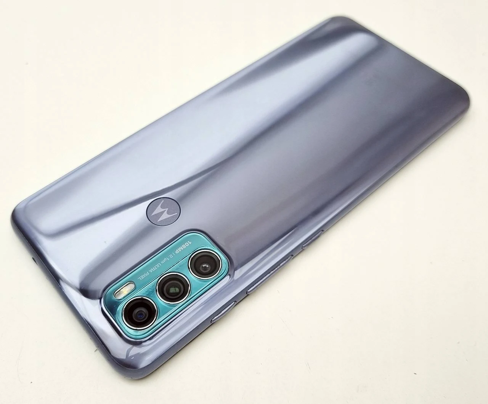

Todo Acerca de Apple
"iPhone 14 pro max"

¿Por qué deberías comprarlo? El nuevo buque insignia de Apple mejora en todo a su antecesor;
pero solo un poco. Atendiendo al precio que tiene, y a las discretas novedades que incorpora,
no tenemos claro que sea el móvil ideal para el común de los usuarios.
Acerca de:
En apariencia, el iPhone 14 Pro es, prácticamente, similar al iPhone 13 Pro.
Los dos terminales tienen las mismas dimensiones (6,7 pulgadas el Pro Max,
que es el que ABC ha probado, y 6,1 el Pro a secas) y la misma pantalla Super Retina
XDR con sus 120 Hz de refresco de imagen, algo bueno para los amantes del 'gaming'.
Precio
$ 25,999.00
"iPhone 13"

Apple llegó bastante tarde a la fiesta 5G. Hasta la fecha,
solo dos de sus rangos de iPhone son compatibles con 5G: el iPhone 12 y el iPhone 13
entrante. modelo de iPhone, desde el iPhone 8 hasta el iPhone 11, deberá actualizar
si desea obtener conectividad 5G.
Si vive en una ciudad importante o cerca de ella, es probable que pueda obtener 5G.
Y si desea obtener 5G en su iPhone, deberá obtener el iPhone 12 o el iPhone 13.
Y dado eso el iPhone 13 es más nuevo y mejor que el iPhone 12, también podría optar
por el iPhone 13.
Descripción: con la misma lente de 12 megapíxeles con una apertura f / 1.6 que el iPhone 2020 Pro de 12. La nueva cámara ultra ancha del iPhone 13 también tiene una lente f / 2.4 más rápida y un campo de visión de 120 grados, así como tecnología de estabilización de cambio de sensor.
Todos los modelos de iPhone 13 cuentan con modo cinematográfico; esta tecnología cambiará automáticamente el enfoque en tiempo real, lo que hará que todos los teléfonos en el rango sean mejores para grabar videos. Apple usó una parodia de Knives Out para demostrar como Modo cinemático obras.
Precio
$ 15,999.00
"iPhone SE"

Descripción: El iPhone SE llegó con sus notorios marcos. Manteniendo su simetría y con su Touch ID en el frontal (que no sea por falta de principios propios), pero con unos marcos que son totalmente anacrónicos con las tendencias actuales.
Precio:
$ 11,999.00
Más información